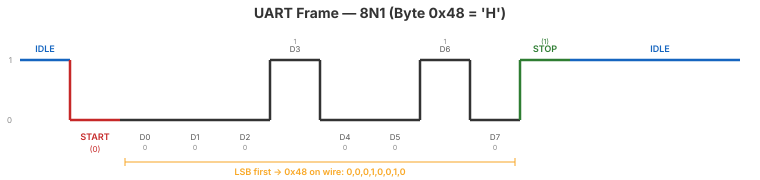

Video 1 of 4 · ~15 minutes
UCF · Department of ECE
Universal Asynchronous Receiver/Transmitter — the simplest serial protocol.
Two wires: TX (transmit) and RX (receive). No shared clock.
Both sides agree on baud rate (bits/sec) in advance.
Everywhere: USB-serial, microcontroller debug, GPS, Bluetooth modules.

Idle: line held HIGH (1)
Start bit: one period LOW (0) — falling edge triggers receiver
Data: 8 bits, LSB first (catches people!)
Stop bit: one period HIGH (1) — return to idle
We use 115200 baud. Each bit lasts 1/115200 ≈ 8.68 µs.
Clocks per bit = 25,000,000 / 115,200 = 217
Actual baud = 25M / 217 ≈ 115,207 (0.006% error — well within ±3% tolerance)
Frame time: 10 × 8.68 µs = 86.8 µs → max ~11,520 bytes/sec (11.5 KB/s)
① UART: 2 wires, no shared clock. Both sides agree on baud rate.
② Frame: idle (high) → start (low) → 8 data LSB first → stop (high).
③ 115200 baud @ 25 MHz = 217 clocks per bit.
④ Baud rate generator = modulo-N counter (Day 5).
Up Next
Video 2 of 4 · ~15 minutes
Decomposing the transmitter into FSM + datapath.